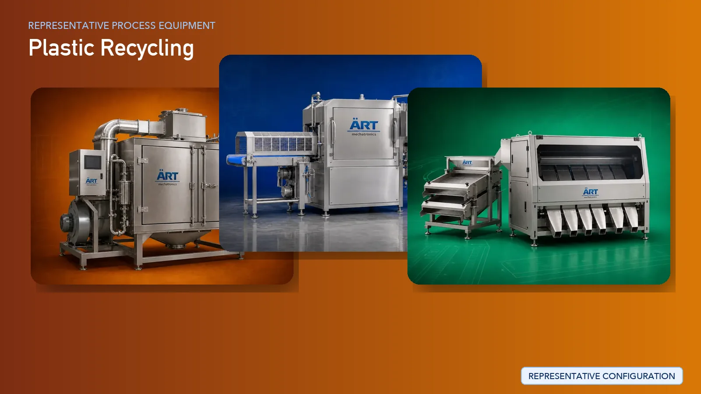

Plastic Recycling Plant & Machinery Solutions (Waste to Granule Reprocessing Systems)
Plastic recycling is a rapidly growing industrial sector focused on converting plastic waste into reusable raw materials such as plastic granules and flakes. With increasing environmental regulations and sustainability goals, recycling has become a critical component of the circular economy.

About Plastic Recycling processing
Plastic recycling plants process materials such as PET bottles, HDPE containers, LDPE films, PP plastics, and industrial plastic scrap, transforming them into high-quality recycled materials suitable for reuse in manufacturing.
ART Mechatronics provides complete turnkey solutions for plastic recycling plants, offering advanced systems for sorting, washing, shredding, extrusion, pelletizing, and packaging. Our solutions are designed for high-efficiency processing, minimal material loss, and production of high-quality recycled plastic granules.
Complete Plastic Recycling Process Flow
Plastic waste is collected and fed into the system.
Ensures continuous material flow.
Different types of plastics are separated.
Ensures:
- Material purity
- Efficient processing
- Plastic flakes
Plastic flakes are cleaned to remove dirt, labels, oil, and contaminants.
Ensures clean recycled material.
Moisture is removed from washed plastic.
Prepares material for extrusion.
Converts light films into dense material.
Plastic is melted and filtered.
Produces molten plastic.
Molten plastic is converted into granules.
Produces:
- Plastic granules (reusable raw material)
Granules are cooled before storage.
- Bulk supply
- Industrial reuse
Types of Plastics Processed
- PET (Bottle Recycling)
- HDPE (Containers, Drums)
- LDPE (Films, Bags)
- PP (Packaging, Caps)
- PVC (Industrial applications)
- Mixed Plastic Waste
Machinery Required for Plastic Recycling Plant
- Conveyor System
- Bale Breaker
- Sorting System
- Metal Separator
- Shredder / Crusher
- Washing System (Friction Washer, Hot Washer)
- Float-Sink Tank
- Dewatering Machine
- Dryer
- Agglomerator
- Plastic Extruder
- Melt Filter
- Pelletizer
- Cooling System
- Storage Silo
- Bag Filling Machine
Turnkey Plastic Recycling Solutions
ART Mechatronics offers complete turnkey solutions for plastic recycling plants, including:
- Process design & plant layout
- Sorting and washing systems
- Size reduction and extrusion systems
- Pelletizing and packaging systems
- Automation & control panels
- Installation & commissioning
- After-sales support
We customize solutions based on:
- Type of plastic waste
- Production capacity
- Output quality requirements
- Automation level
Why Choose Art Mechatronics
- Expertise in recycling and material recovery systems
- High-efficiency processing with minimal loss
- Advanced washing and filtration technology
- Energy-efficient plant design
- Consistent granule quality
- Global export capability
Machinery in a Plastic Recycling plant
Where it's used
Get pricing & specs for the Plastic Recycling plant
Share the product, target capacity, current process and plant location. These details help our engineers discuss the right machine or line configuration.
One partner, from design to start-up
ART Mechatronics designs, manufactures, installs and commissions your Plastic Recycling solution with regional presence in India, UAE and Thailand.